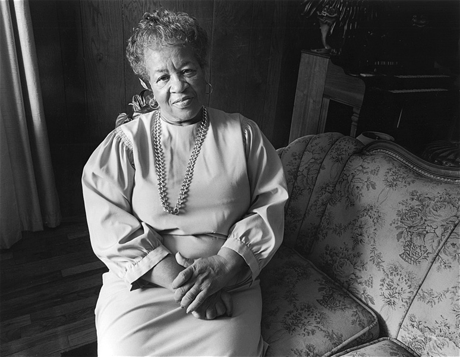
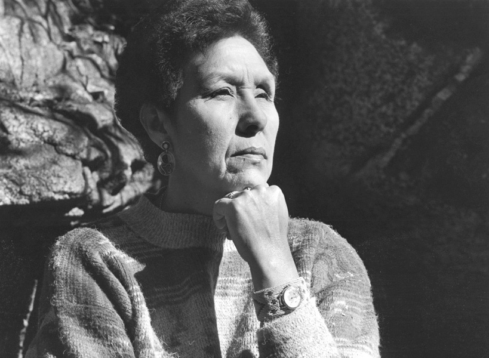
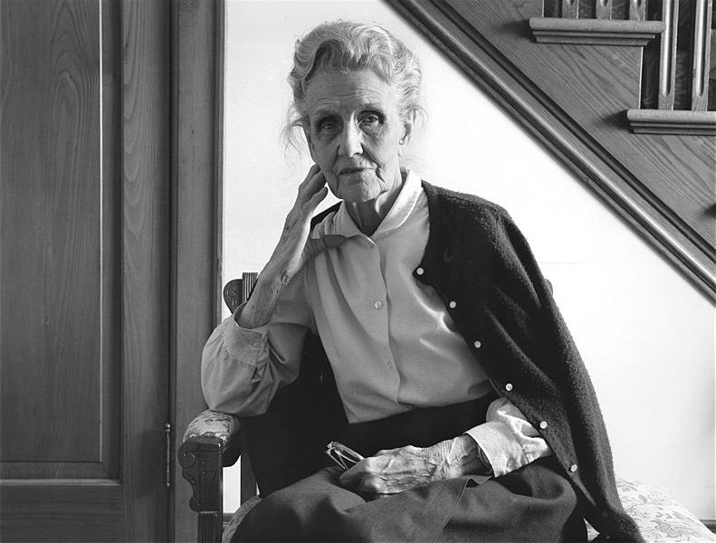

Serving Home and Community: Women of Southern Appalachia
Ravenswood, Ivanhoe, Pippa Passes, Cherokee—the picturesque place names of the southern Appalachian
highlands can belie the harsh realities of daily life in these hills. In a land of coal mines and
company towns, the women of this lovely but isolated region have faced uncommon challenges in their
struggles to keep their families, communities, and cultures intact. Many of these women have
demonstrated admirable determination and dignity in the midst of unemployment, illness, and natural
disaster. Their resourcefulness and perseverance are testaments to the American spirit.
Serving Home and Community: Women of Southern Appalachia paid tribute to these acts of personal
heroism. Some 50 black and white photos by Barbara Beirne show women) of the region who have
suffered economic hardships due to mining and agricultural issues and who have had to care for
children, grandchildren and sick husbands. Sometimes pastoral, sometimes bleak, these haunting
images of Appalachian towns and countrysides set the environmental stage for the stories told in the
portraits.
Starting in 1992, Beirne traveled the small towns and quiet valleys of Kentucky, North Carolina,
Tennessee, Virginia, and West Virginia, photographing and interviewing many of the remarkable women
who call this region home. Beirne's richly detailed black-and-white photographs capture the historic
struggles and inspirational accomplishments of two generations of Appalachian women, revealing the
region's social, racial, and cultural diversity. Each portrait is paired with an excerpt from
Barbara Beirne's interviews, allowing each woman to recount her story in her own unique voice.
Organized by the Smithsonian's National Museum of American History and curated by David Haberstich,
head of photographic collections at NMAH's Archives Center, this exhibition toured in nine states
from 1999-2003.
My mother was a domestic, but she taught me I could be anything I wanted to be—if I worked hard
enough. Now that I'm a police captain, I want to be a pathfinder for those after me. I would not be
where I am today were it not for people like Rosa Parks, Martin Luther King, and Eleanor
Roosevelt. —Ivin Lee, Dunbar, West Virginia, 1996
International Storytelling Center, Jonesborough, TN
Three Rivers Gallery, Poplar Bluffs, MO
Spartanburg County Public Library, Spartanburg, SC
Dayton Cultural Center, Dayton, OH
McMinn County Living Heritage Museum, Athens, TN
Exhibit A Gallery, New York, NY
Virginia Historical Society, Richmond, VA
Noyes Museum of Art, Oceanville, NJ
Georgetown College, Georgetown, KY
Southeast Community College, Cumberland, KY
Dayton and Montgomery Public Library, Dayton, OH
Ann Arbor District Library, Ann Arbor, MI
Morehead State University, Morehead, KY
Ohio University, Zanesville, OH
Wrather West Kentucky Museum, Murray, KY
When I was little I lived right down thar in a two room house. We had five or six
beds to
a room, but it was the warmest house there ever was.
My Daddy worked on the farm, and Mommy made our coats and dresses. She made our
socks
from the wool after they sheared the sheep.
My Daddy had three or four guns. I was teached what to do.
Sylvie Turner
Kite, Kentucky
Many lies and half-truths have been written about the mountain people,
but we know God sent his strongest men and women who could enjoy life and
search the few pleasures contained in a life of hard work.
I wrote my book, “What My Heart Wants To Tell” because I wanted my
grandchildren to be proud of their heritage. Now, surprisingly, my book is in
it's
fifth
printing
Verna Mae Slone
Pippa Passes, Kentucky
I taught school in Delaware but decided to come home to Kentucky.
In 1977 the coal companies were hiring women right and left, so I decided
to work in the mines. I can make money and I can afford to get what I want and do
what I
want.
My grandmother probably turned over in her grave.
Mary Jack Hargins
Lebanon, Virginia
My parents were missionaries, and my childhood was spent in China. I came to Kentucky
when my
husband was appointed president of Berea College.
I worked twenty-eight years as a pediatrician, and had clinics all over the state.
Many
unprivileged folks had large families, and I introduced them
to family planning. The mothers were so happy they soon sent their teenage daughters
to
me
for
advice.
Louise Gilman Hutchins
Berea, Kentucky
I'll be 87 in January, and I'm still able to work and eat everything I can
get
ahold
of.
I own this grocery store. I make quilts in the back of the store and grow onions in
a
garden
on
the side.
We've got Indian blood in us. That's why we work like we do.
Mary Steele
Swords Creek, Virginia

We came to Bishop when I was nineteen, so my husband could work in the mines. I
raised my
four
children in this house without running water.
We had our good times and our bad times. Men were killed in explosions. There were
strikes,
layoffs, and we were flooded out twice.
We lost everything, but we were a tight community basd on love. Color didn't
make
no
difference. All the miners were brothers.
Dorthula Hargrave
Bishop, Virginia
When I was a young'un I chopped down trees to make props for the mines and even
dug
coal
in
the mines.
I worked hard doing a man's work. I had to or I'd git hit. Today
young'uns
don't want to do nothing.
You got to raise them up right. If you tell children to do something - mean it.
Mary Gibson
Estill, Kentucky

My ancestors hid in the mountains so they wouldn't have to march to Oklahoma
when
the
government drove the Cherokees out of North Carolina.
I think preserving our traditions is essential to our survival as a Cherokee people.
I
teach
the
Cherokee language to our young people.
We are the only tribe with a written language that uses its own alphabet.
Myrtle Driver
Cherokee, North Carolina
Me and Amos were married 51 years, but the Lord needed him worse than I did, so He
took
him
away
from me.
I said, “Lord you know I'm left alone, but you're going to stay with
me.
I ain't doubting you for nothing.” I never did feel afraid, and I
ain't
going to
give up.
The Lord didn't come down here and promise me a bed of roses.
Lord have mercy.
O.C. Puckett
Bonanza, Kentucky
My mother was a domestic, but she taught me that I could be anything I wanted to be
— if
I worked hard enough.
Now that I'm a police captain I want to be a pathfinder for those after me. I
would
not be
where I am today were it not for people like Rosa Parks,
Martin Luther King and Eleanor Roosevelt.
Ivin Lee
Dunbar, West Virginia

I grew up on a farm in Wythe County and got my first job teaching when I was 17 years
old.
It was a one-room school. The only water we had was what the kids carried to school
in a
bucket
from a spring somewhere.
I had to build the fires and sweep and everything. It was way back when.
Osa Price
Ivanhoe, Virginia
Lots of folks come up here looking for their roots. I don't have to look,
'cause my
roots are running deep in these mountains and way deep in the stories I've
heard
all my
life.
And I got to tell about the people in the mountain … I just got to tell those
stories.
People need them, specially those folks who come up here looking for something to
comfort
them.